CODING AGENTS AS PIXEL WORLD MODELS
traex/DeepSeek-V4.1-Flash · material_0030
点击播放 · 原生 RGB 像素
逐轮保存的候选
回放视频、检查图与代码变化。
每份候选均可单独播放。实际图片检查记录在下方工具轨迹中。
候选 01播放与检查图
点击播放 · 原生 RGB 像素

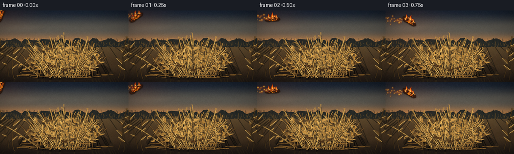
展开代码变化
--- 上一保存版本
+++ 本次保存版本
@@ -0,0 +1,927 @@
+"""Procedurally generate a short shot of a burning stick landing in corn stalks."""
+
+from __future__ import annotations
+
+import math
+from pathlib import Path
+
+import artifact_io
+import numpy as np
+from PIL import Image, ImageDraw, ImageFilter
+
+
+CASE_DIR = Path(__file__).resolve().parent
+WIDTH = 256
+HEIGHT = 144
+FRAMES = 20
+FPS = 4.0
+SS = 4
+HW = WIDTH * SS
+HH = HEIGHT * SS
+
+IMPACT_FRAME = 8
+IMPACT = np.array([118.0, 91.0], dtype=np.float32)
+
+
+def clamp(value, low=0.0, high=1.0):
+ if isinstance(value, np.ndarray):
+ return np.clip(value, low, high)
+ return max(low, min(high, value))
+
+
+def smoothstep(value):
+ value = clamp(value)
+ return value * value * (3.0 - 2.0 * value)
+
+
+def mix(a, b, amount):
+ if isinstance(amount, np.ndarray) and amount.ndim == 2:
+ amount = amount[..., None]
+ return a * (1.0 - amount) + b * amount
+
+
+def srgb(rgb):
+ return tuple(int(clamp(component, 0, 255)) for component in rgb)
+
+
+def bezier(p0, p1, p2, p3, count=24):
+ t = np.linspace(0.0, 1.0, count)[:, None]
+ p0, p1, p2, p3 = (np.asarray(point, dtype=np.float32) for point in (p0, p1, p2, p3))
+ return (
+ (1.0 - t) ** 3 * p0
+ + 3.0 * (1.0 - t) ** 2 * t * p1
+ + 3.0 * (1.0 - t) * t**2 * p2
+ + t**3 * p3
+ )
+
+
+def scaled_points(points):
+ return [(float(x) * SS, float(y) * SS) for x, y in points]
+
+
+def draw_polyline(draw, points, fill, width):
+ coords = scaled_points(points)
+ draw.line(coords, fill=fill, width=max(1, int(round(width * SS))), joint="curve")
+
+
+def composite_rgba(base, overlay):
+ return Image.alpha_composite(base.convert("RGBA"), overlay).convert("RGB")
+
+
+def make_background(rng):
+ y = np.broadcast_to(
+ np.linspace(0.0, 1.0, HH, dtype=np.float32)[:, None], (HH, HW)
+ )
+ x = np.broadcast_to(
+ np.linspace(0.0, 1.0, HW, dtype=np.float32)[None, :], (HH, HW)
+ )
+ horizon = 0.465
+
+ sky_top = np.array([27.0, 36.0, 49.0], dtype=np.float32)
+ sky_mid = np.array([89.0, 86.0, 79.0], dtype=np.float32)
+ sky_low = np.array([181.0, 125.0, 75.0], dtype=np.float32)
+ sky_t = np.clip(y / horizon, 0.0, 1.0)
+ lower_sky = mix(sky_mid, sky_low, smoothstep((sky_t - 0.50) / 0.50))
+ upper_sky = mix(sky_top, sky_mid, smoothstep(sky_t / 0.55))
+ sky = mix(upper_sky, lower_sky, smoothstep((sky_t - 0.40) / 0.60))
+
+ warm_horizon = np.exp(-((y - horizon) / 0.045) ** 2) * (0.25 + 0.30 * (1.0 - x))
+ sky += warm_horizon[..., None] * np.array([38.0, 20.0, 4.0], dtype=np.float32)
+
+ ground_top = np.array([91.0, 72.0, 47.0], dtype=np.float32)
+ ground_mid = np.array([70.0, 53.0, 35.0], dtype=np.float32)
+ ground_bottom = np.array([35.0, 28.0, 23.0], dtype=np.float32)
+ ground_t = np.clip((y - horizon) / (1.0 - horizon), 0.0, 1.0)
+ ground = mix(ground_top, ground_mid, smoothstep(ground_t / 0.55))
+ ground = mix(ground, ground_bottom, smoothstep((ground_t - 0.55) / 0.45))
+
+ image = np.where((y < horizon)[..., None], sky, ground)
+ haze = np.exp(-((y - horizon) / 0.032) ** 2)
+ image = image * (1.0 - 0.20 * haze[..., None]) + np.array([173.0, 125.0, 81.0]) * (
+ 0.20 * haze[..., None]
+ )
+
+ # Coarse atmospheric mottling, then a fine photographic grain.
+ coarse = rng.normal(0.0, 1.0, (24, 43, 1)).astype(np.float32)
+ coarse = np.asarray(
+ Image.fromarray(((coarse[:, :, 0] * 5.0) + 128.0).clip(0, 255).astype(np.uint8)).resize(
+ (HW, HH), Image.Resampling.BICUBIC
+ ),
+ dtype=np.float32,
+ )
+ image += (coarse[:, :, None] - 128.0) * 0.055
+ fine = rng.normal(0.0, 1.0, (HEIGHT, WIDTH, 1)).astype(np.float32)
+ fine = np.asarray(
+ Image.fromarray(((fine[:, :, 0] * 9.0) + 128.0).clip(0, 255).astype(np.uint8)).resize(
+ (HW, HH), Image.Resampling.BICUBIC
+ ),
+ dtype=np.float32,
+ )
+ image += (fine[:, :, None] - 128.0) * 0.085
+
+ base = Image.fromarray(np.clip(image, 0, 255).astype(np.uint8), "RGB").convert("RGBA")
+ draw = ImageDraw.Draw(base, "RGBA")
+
+ # Distant field rows and a broken, wind-shaped tree line.
+ row_rng = np.random.default_rng(44)
+ for index in range(52):
+ start_x = row_rng.uniform(-30.0, WIDTH + 30.0)
+ end_x = WIDTH * 0.5 + (start_x - WIDTH * 0.5) * row_rng.uniform(1.2, 2.1)
+ alpha = int(row_rng.uniform(8.0, 23.0))
+ draw.line(
+ [(start_x * SS, 67.0 * SS), (end_x * SS, HEIGHT * SS)],
+ fill=(44, 36, 25, alpha),
+ width=int(row_rng.uniform(1.0, 2.6) * SS),
+ )
+
+ tree_points = [(0, 64)]
+ tree_rng = np.random.default_rng(73)
+ for index in range(37):
+ tx = index * WIDTH / 36.0
+ ty = 59.0 + 2.8 * math.sin(index * 1.37) + tree_rng.uniform(-2.0, 2.5)
+ tree_points.append((tx, ty))
+ tree_points.extend([(WIDTH, 66), (WIDTH, 73), (0, 73)])
+ draw.polygon(scaled_points(tree_points), fill=(39, 41, 38, 205))
+
+ tree_rng = np.random.default_rng(75)
+ for _ in range(95):
+ tx = tree_rng.uniform(0.0, WIDTH)
+ top = 58.0 + tree_rng.uniform(-3.0, 3.5)
+ height = tree_rng.uniform(3.0, 10.0)
+ width = tree_rng.uniform(0.35, 0.9)
+ draw.line(
+ [(tx * SS, top * SS), ((tx + tree_rng.uniform(-1.5, 1.5)) * SS, (top + height) * SS)],
+ fill=(32, 35, 32, int(tree_rng.uniform(100, 210))),
+ width=max(1, int(width * SS)),
+ )
+
+ # Low stubble along the horizon.
+ stubble_rng = np.random.default_rng(19)
+ for _ in range(190):
+ sx = stubble_rng.uniform(0.0, WIDTH)
+ sy = stubble_rng.uniform(65.0, 75.0)
+ length = stubble_rng.uniform(1.0, 5.5)
+ lean = stubble_rng.uniform(-1.0, 1.2)
+ draw.line(
+ [(sx * SS, sy * SS), ((sx + lean) * SS, (sy - length) * SS)],
+ fill=(88, 70, 42, int(stubble_rng.uniform(35, 100))),
+ width=SS,
+ )
+
+ # Soft cloud bands add depth without competing with the action.
+ cloud = Image.new("RGBA", (HW, HH), (0, 0, 0, 0))
+ cloud_draw = ImageDraw.Draw(cloud, "RGBA")
+ cloud_rng = np.random.default_rng(211)
+ for _ in range(13):
+ cx = cloud_rng.uniform(-20.0, WIDTH + 20.0)
+ cy = cloud_rng.uniform(8.0, 48.0)
+ cw = cloud_rng.uniform(45.0, 130.0)
+ ch = cloud_rng.uniform(3.0, 10.0)
+ cloud_draw.ellipse(
+ [(cx - cw / 2) * SS, (cy - ch / 2) * SS, (cx + cw / 2) * SS, (cy + ch / 2) * SS],
+ fill=(209, 180, 147, int(cloud_rng.uniform(7, 18))),
+ )
+ cloud = cloud.filter(ImageFilter.GaussianBlur(4.5 * SS))
+ base = Image.alpha_composite(base, cloud)
+
+ return base
+
+
+def leaf_polygon(base, direction, length, width, bend):
+ direction = np.asarray(direction, dtype=np.float32)
+ direction /= max(1e-6, float(np.linalg.norm(direction)))
+ normal = np.array([-direction[1], direction[0]], dtype=np.float32)
+ left = []
+ right = []
+ for s in np.linspace(0.0, 1.0, 9):
+ center = (
+ np.asarray(base, dtype=np.float32)
+ + direction * length * s
+ + normal * bend * math.sin(math.pi * s)
+ )
+ half_width = width * (math.sin(math.pi * s) ** 0.72) * (0.76 + 0.24 * math.sin(s * 7.0))
+ left.append(center + normal * half_width)
+ right.append(center - normal * half_width)
+ return left + list(reversed(right))
+
+
+def draw_leaf(draw, base, direction, length, width, bend, color, outline):
+ points = leaf_polygon(base, direction, length, width, bend)
+ draw.polygon(scaled_points(points), fill=color)
+ draw.line(scaled_points([points[0], points[len(points) // 2]]), fill=outline, width=max(1, SS))
+ midrib_end = np.asarray(base) + np.asarray(direction) / max(1e-6, np.linalg.norm(direction)) * length
+ draw.line(
+ scaled_points([base, midrib_end]),
+ fill=(231, 191, 109, 95),
+ width=max(1, SS),
+ )
+
+
+def draw_tassel(draw, tip, direction, scale, color, rng):
+ direction = np.asarray(direction, dtype=np.float32)
+ direction /= max(1e-6, float(np.linalg.norm(direction)))
+ base = np.asarray(tip, dtype=np.float32)
+ for branch in range(6):
+ angle = math.atan2(direction[1], direction[0]) + rng.uniform(-0.55, 0.55)
+ length = scale * rng.uniform(0.55, 1.25)
+ endpoint = base + np.array([math.cos(angle), math.sin(angle)]) * length
+ draw.line(
+ scaled_points([base, endpoint]),
+ fill=color,
+ width=max(1, int(rng.uniform(0.7, 1.25) * SS)),
+ )
+
+
+def draw_background_stalks(base, rng):
+ draw = ImageDraw.Draw(base, "RGBA")
+ configurations = [
+ (18.0, 133.0, -1.82, 72.0, (88, 65, 35, 185)),
+ (29.0, 138.0, -1.63, 61.0, (105, 76, 39, 175)),
+ (236.0, 135.0, -1.37, 78.0, (90, 66, 35, 185)),
+ (246.0, 140.0, -1.57, 58.0, (77, 58, 34, 175)),
+ ]
+ for x0, y0, angle, length, color in configurations:
+ bend = rng.uniform(-9.0, 9.0)
+ p0 = (x0, y0)
+ p1 = (x0 + math.cos(angle) * length * 0.34 + bend, y0 + math.sin(angle) * length * 0.36)
+ p2 = (
+ x0 + math.cos(angle) * length * 0.72 - bend * 0.35,
+ y0 + math.sin(angle) * length * 0.72,
+ )
+ p3 = (x0 + math.cos(angle) * length, y0 + math.sin(angle) * length)
+ points = bezier(p0, p1, p2, p3, 22)
+ draw_polyline(draw, points, (35, 28, 20, 170), 2.1)
+ draw_polyline(draw, points, color, 1.05)
+ for fraction in (0.35, 0.62, 0.84):
+ index = int(fraction * (len(points) - 1))
+ px, py = points[index]
+ side = -1.0 if rng.random() < 0.5 else 1.0
+ leaf_dir = (math.cos(angle + side * 0.95), math.sin(angle + side * 0.95))
+ draw_leaf(
+ draw,
+ (px, py),
+ leaf_dir,
+ rng.uniform(8.0, 17.0),
+ rng.uniform(1.4, 2.8),
+ rng.uniform(-3.0, 3.0),
+ (104, 73, 37, 180),
+ (53, 41, 25, 160),
+ )
+ draw_tassel(draw, p3, (math.cos(angle), math.sin(angle)), 7.0, (101, 76, 42, 165), rng)
+
+
+def draw_corn_pile(base, rng):
+ overlay = Image.new("RGBA", (HW, HH), (0, 0, 0, 0))
+ draw = ImageDraw.Draw(overlay, "RGBA")
+
+ draw.ellipse(
+ [35 * SS, 101 * SS, 221 * SS, 140 * SS],
+ fill=(23, 19, 15, 105),
+ )
+ draw.ellipse(
+ [50 * SS, 111 * SS, 209 * SS, 137 * SS],
+ fill=(12, 10, 8, 85),
+ )
+
+ stalk_rng = np.random.default_rng(613)
+ stalks = []
+ for index in range(148):
+ depth = stalk_rng.uniform(0.0, 1.0)
+ root_x = stalk_rng.normal(128.0, 25.0)
+ root_x = clamp(root_x, 74.0, 184.0)
+ root_y = stalk_rng.uniform(126.0, 136.0)
+ side = (root_x - 128.0) / 58.0
+ angle = -math.pi / 2.0 + side * 0.48 + stalk_rng.uniform(-0.56, 0.56)
+ length = stalk_rng.uniform(31.0, 69.0) * (1.0 + 0.20 * depth)
+ tip_x = root_x + math.cos(angle) * length
+ tip_y = root_y + math.sin(angle) * length
+ bend = stalk_rng.uniform(-12.0, 12.0)
+ p0 = (root_x, root_y)
+ p1 = (
+ root_x + math.cos(angle) * length * 0.32 + bend * 0.20,
+ root_y + math.sin(angle) * length * 0.35,
+ )
+ p2 = (
+ root_x + math.cos(angle) * length * 0.70 - bend * 0.35,
+ root_y + math.sin(angle) * length * 0.74,
+ )
+ p3 = (tip_x, tip_y)
+ points = bezier(p0, p1, p2, p3, 25)
+ tone = stalk_rng.uniform(0.0, 1.0)
+ if depth < 0.30:
+ color = (118 + int(18 * tone), 82 + int(16 * tone), 42 + int(10 * tone), 225)
+ outline = (51, 39, 23, 190)
+ elif depth < 0.77:
+ color = (165 + int(25 * tone), 120 + int(24 * tone), 58 + int(17 * tone), 245)
+ outline = (68, 49, 26, 210)
+ else:
+ color = (198 + int(25 * tone), 151 + int(27 * tone), 74 + int(20 * tone), 255)
+ outline = (91, 62, 30, 205)
+ stalks.append(
+ {
+ "depth": depth,
+ "points": points,
+ "color": color,
+ "outline": outline,
+ "width": stalk_rng.uniform(0.75, 2.0) * (0.82 + 0.30 * depth),
+ "angle": angle,
+ "length": length,
+ "root": p0,
+ "tip": p3,
+ "tone": tone,
+ }
+ )
+
+ stalks.sort(key=lambda item: item["depth"])
+ for index, stalk in enumerate(stalks):
+ points = stalk["points"]
+ width = stalk["width"]
+ draw_polyline(draw, points, (31, 24, 17, 115), width + 1.4)
+ draw_polyline(draw, points, stalk["color"], width)
+ if stalk["depth"] > 0.50:
+ highlight = [(x - 0.32, y - 0.48) for x, y in points]
+ draw_polyline(draw, highlight, (245, 203, 121, 72), max(0.55, width * 0.30))
+
+ for fraction in (0.23, 0.48, 0.73):
+ point_index = int(fraction * (len(points) - 1))
+ node = points[point_index]
+ normal_angle = stalk["angle"] + math.pi / 2.0
+ node_half = width * 2.1 + 0.8
+ draw.line(
+ scaled_points(
+ [
+ (
+ node[0] - math.cos(normal_angle) * node_half,
+ node[1] - math.sin(normal_angle) * node_half,
+ ),
+ (
+ node[0] + math.cos(normal_angle) * node_half,
+ node[1] + math.sin(normal_angle) * node_half,
+ ),
+ ]
+ ),
+ fill=(88, 59, 28, 165),
+ width=max(1, int(0.8 * SS)),
+ )
+
+ leaf_count = 2 if stalk["depth"] < 0.40 else 3
+ for _ in range(leaf_count):
+ fraction = stalk_rng.uniform(0.28, 0.83)
+ point_index = int(fraction * (len(points) - 1))
+ leaf_base = points[point_index]
+ side = -1.0 if stalk_rng.random() < 0.5 else 1.0
+ leaf_angle = stalk["angle"] + side * stalk_rng.uniform(0.55, 1.35)
+ leaf_length = stalk_rng.uniform(6.0, 15.5)
+ leaf_tone = stalk_rng.uniform(0.0, 1.0)
+ if stalk["depth"] < 0.36:
+ leaf_color = (125, 86, 43, 205)
+ else:
+ leaf_color = (
+ 175 + int(44 * leaf_tone),
+ 126 + int(41 * leaf_tone),
+ 57 + int(31 * leaf_tone),
+ 238,
+ )
+ draw_leaf(
+ draw,
+ leaf_base,
+ (math.cos(leaf_angle), math.sin(leaf_angle)),
+ leaf_length,
+ stalk_rng.uniform(1.2, 3.2),
+ stalk_rng.uniform(-3.8, 3.8),
+ leaf_color,
+ (77, 50, 24, 185),
+ )
+
+ if stalk["depth"] > 0.72 and stalk["tip"][1] < 107.0:
+ draw_tassel(
+ draw,
+ stalk["tip"],
+ (math.cos(stalk["angle"] - 0.1), math.sin(stalk["angle"] - 0.1)),
+ stalk_rng.uniform(4.0, 8.0),
+ (188, 142, 71, 185),
+ stalk_rng,
+ )
+
+ # A few fallen strands at the foot of the pile make the base read as loose material.
+ for _ in range(23):
+ y0 = stalk_rng.uniform(121.0, 136.0)
+ x0 = stalk_rng.uniform(47.0, 203.0)
+ length = stalk_rng.uniform(12.0, 37.0)
+ angle = stalk_rng.uniform(-0.16, 0.16) + (0.0 if stalk_rng.random() < 0.65 else math.pi)
+ points = bezier(
+ (x0, y0),
+ (x0 + math.cos(angle) * length * 0.33, y0 + stalk_rng.uniform(-3.0, 3.0)),
+ (x0 + math.cos(angle) * length * 0.72, y0 + stalk_rng.uniform(-4.0, 4.0)),
+ (x0 + math.cos(angle) * length, y0 + stalk_rng.uniform(-3.0, 3.0)),
+ 12,
+ )
+ draw_polyline(draw, points, (42, 30, 18, 145), 1.5)
+ draw_polyline(draw, points, (177, 127, 60, 225), stalk_rng.uniform(0.7, 1.3))
+
+ # Small dry cobs tucked into the pile add a second material cue.
+ cob_rng = np.random.default_rng(808)
+ for cx, cy, angle, length in [
+ (102.0, 111.0, 0.32, 13.0),
+ (145.0, 115.0, -0.42, 11.0),
+ (128.0, 119.0, 0.08, 9.0),
+ ]:
+ dx = math.cos(angle) * length
+ dy = math.sin(angle) * length
+ draw.line(
+ scaled_points([(cx - dx / 2, cy - dy / 2), (cx + dx / 2, cy + dy / 2)]),
+ fill=(76, 51, 27, 245),
+ width=int(3.8 * SS),
+ )
+ for step in range(6):
+ s = (step + 0.5) / 6.0
+ px = cx - dx / 2 + dx * s
+ py = cy - dy / 2 + dy * s
+ draw.ellipse(
+ [(px - 1.5) * SS, (py - 1.5) * SS, (px + 1.5) * SS, (py + 1.5) * SS],
+ fill=(160, 109, 50, 210),
+ outline=(63, 41, 24, 220),
+ width=SS,
+ )
+ draw.line(
+ scaled_points([(cx - dx / 2, cy - dy / 2), (cx - dx * 0.8, cy - dy * 0.8)]),
+ fill=(202, 160, 91, 220),
+ width=SS,
+ )
+
+ # Warm top-edge accents.
+ accent_rng = np.random.default_rng(118)
+ for _ in range(28):
+ x0 = accent_rng.uniform(63.0, 194.0)
+ y0 = accent_rng.uniform(91.0, 113.0)
+ points = bezier(
+ (x0, y0),
+ (x0 + accent_rng.uniform(-9.0, 9.0), y0 - accent_rng.uniform(2.0, 7.0)),
+ (x0 + accent_rng.uniform(-13.0, 13.0), y0 + accent_rng.uniform(-3.0, 5.0)),
+ (x0 + accent_rng.uniform(-19.0, 19.0), y0 + accent_rng.uniform(-4.0, 7.0)),
+ 8,
+ )
+ draw_polyline(
+ draw,
+ points,
+ (235, 190, 105, int(accent_rng.uniform(55, 125))),
+ 0.65,
+ )
+
+ base.alpha_composite(overlay)
+
+
+def build_static_scene():
+ rng = np.random.default_rng(20261111)
+ base = make_background(rng)
+ draw_background_stalks(base, rng)
+ draw_corn_pile(base, rng)
+
+ # Gentle vignette in the static plate.
+ image = np.asarray(base.convert("RGB"), dtype=np.float32)
+ yy, xx = np.mgrid[0:HH, 0:HW]
+ nx = (xx - HW * 0.5) / (HW * 0.5)
+ ny = (yy - HH * 0.5) / (HH * 0.5)
+ vignette = 1.0 - 0.18 * np.clip((nx * nx * 0.72 + ny * ny * 0.55 - 0.20), 0.0, 1.0) ** 1.4
+ image *= vignette[..., None]
+ return Image.fromarray(np.clip(image, 0, 255).astype(np.uint8), "RGB")
+
+
+def transformed_points(points, center, angle, scale=1.0):
+ cosine = math.cos(angle)
+ sine = math.sin(angle)
+ cx, cy = center
+ transformed = []
+ for px, py in points:
+ sx = px * scale
+ sy = py * scale
+ transformed.append((cx + sx * cosine - sy * sine, cy + sx * sine + sy * cosine))
+ return transformed
+
+
+def draw_flame_shape(draw, cx, base_y, width, height, phase, seed, opacity=1.0):
+ def shape_points(scale_w, scale_h, wave):
+ left = []
+ right = []
+ segments = 9
+ for step in range(segments):
+ u = step / (segments - 1)
+ taper = (1.0 - u) ** 0.82
+ wobble = (
+ math.sin(phase * 1.55 + seed + u * 5.8) * 0.16
+ + math.sin(phase * 2.35 + seed * 1.7 + u * 9.1) * 0.08
+ )
+ offset = width * scale_w * 0.5 * taper
+ center_x = cx + width * scale_w * (0.06 * u + wave * 0.11) + width * scale_w * wobble * u
+ y = base_y - height * scale_h * u
+ left.append((center_x - offset * (0.88 + 0.12 * math.sin(u * 8.0 + seed)), y))
+ right.append((center_x + offset * (0.88 + 0.12 * math.cos(u * 7.0 + seed)), y))
+ tip = (
+ cx
+ + width * scale_w * (0.10 * wave + 0.20 * math.sin(phase * 2.8 + seed))
+ + width * scale_w * 0.06,
+ base_y - height * scale_h * 1.02,
+ )
+ return left + [tip] + list(reversed(right))
+
+ wave = math.sin(phase * 1.35 + seed * 0.9)
+ outer = shape_points(1.0, 1.0, wave)
+ middle = shape_points(0.66, 0.69, wave * 0.65)
+ core = shape_points(0.32, 0.42, wave * 0.35)
+ draw.polygon(scaled_points(outer), fill=(255, 70, 12, int(175 * opacity)))
+ draw.polygon(scaled_points(middle), fill=(255, 137, 24, int(225 * opacity)))
+ draw.polygon(scaled_points(core), fill=(255, 224, 112, int(238 * opacity)))
+
+
+def draw_burning_log(overlay, x, y, angle, scale, phase, alpha=1.0):
+ draw = ImageDraw.Draw(overlay, "RGBA")
+ center = (x, y)
+ body = [
+ (-16.0, -2.6),
+ (-12.0, -4.8),
+ (-6.0, -4.3),
+ (1.0, -5.1),
+ (8.0, -4.4),
+ (15.0, -2.5),
+ (17.0, 0.1),
+ (13.0, 3.8),
+ (7.0, 4.5),
+ (-1.0, 4.1),
+ (-9.0, 4.8),
+ (-15.0, 2.7),
+ ]
+ shadow = [(px + 0.8, py + 1.3) for px, py in body]
+ draw.polygon(
+ scaled_points(transformed_points(shadow, center, angle, scale)),
+ fill=(12, 9, 7, int(90 * alpha)),
+ )
+ draw.polygon(
+ scaled_points(transformed_points(body, center, angle, scale)),
+ fill=(39, 24, 17, int(255 * alpha)),
+ outline=(16, 12, 10, int(240 * alpha)),
+ width=max(1, int(0.7 * SS)),
+ )
+ top_edge = [
+ transformed_points([(-12.0, -3.6), (-5.0, -4.0), (3.0, -4.5), (11.0, -3.4)], center, angle, scale)
+ ][0]
+ draw.line(scaled_points(top_edge), fill=(111, 63, 32, int(215 * alpha)), width=max(1, int(0.9 * SS)))
+
+ crack_paths = [
+ [(-12.0, -0.8), (-7.0, 0.2), (-2.0, -1.2), (3.0, 0.4), (9.0, -0.3)],
+ [(-7.0, 2.5), (-2.0, 1.4), (4.0, 2.6), (10.0, 1.5)],
+ [(-1.0, -3.8), (0.5, -1.8), (-1.0, 1.7), (1.0, 3.7)],
+ ]
+ for index, path in enumerate(crack_paths):
+ draw.line(
+ scaled_points(transformed_points(path, center, angle, scale)),
+ fill=(255, 91 + 30 * index, 22, int(235 * alpha)),
+ width=max(1, int((0.8 + 0.22 * index) * SS)),
+ )
+
+ for index, (lx, h, w) in enumerate([(-8.0, 8.5, 5.0), (1.0, 12.0, 6.5), (9.0, 7.0, 4.2)]):
+ local = transformed_points([(lx, -3.0)], center, angle, scale)[0]
+ draw_flame_shape(
+ draw,
+ local[0],
+ local[1],
+ w * scale,
+ h * scale,
+ phase + index * 0.9,
+ 14.0 + index * 2.7,
+ opacity=alpha,
+ )
+
+ spark_rng = np.random.default_rng(500 + int(phase * 1000))
+ for _ in range(8):
+ local = transformed_points(
+ [(spark_rng.uniform(-10.0, 12.0), spark_rng.uniform(-8.0, 1.0))], center, angle, scale
+ )[0]
+ radius = spark_rng.uniform(0.35, 1.0)
+ draw.ellipse(
+ [
+ (local[0] - radius * 2.2) * SS,
+ (local[1] - radius * 2.2) * SS,
+ (local[0] + radius * 2.2) * SS,
+ (local[1] + radius * 2.2) * SS,
+ ],
+ fill=(255, 92, 17, int(55 * alpha)),
+ )
+ draw.ellipse(
+ [
+ (local[0] - radius) * SS,
+ (local[1] - radius) * SS,
+ (local[0] + radius) * SS,
+ (local[1] + radius) * SS,
+ ],
+ fill=(255, 214, 105, int(235 * alpha)),
+ )
+
+
+def log_state(frame):
+ keys = np.array(
+ [
+ [2.0, 10.0],
+ [15.0, 14.0],
+ [30.0, 17.5],
+ [47.0, 22.0],
+ [66.0, 30.0],
+ [85.0, 42.0],
+ [101.0, 57.0],
+ [112.0, 74.0],
+ [118.0, 91.0],
+ ],
+ dtype=np.float32,
+ )
+ angles = [-1.20, -0.62, -0.04, 0.52, 1.12, 1.74, 2.32, 2.93, 3.55]
+ if frame <= IMPACT_FRAME:
+ x, y = keys[frame]
+ angle = angles[frame]
+ scale = 0.94
+ else:
+ age = frame - IMPACT_FRAME
+ bounce = math.exp(-age * 0.8) * math.sin(age * 2.1) * 3.0
+ x = 118.0 + age * 0.22
+ y = 94.2 - max(0.0, bounce)
+ angle = 3.22 + age * 0.025
+ scale = 1.0
+ return float(x), float(y), float(angle), float(scale)
+
+
+def precompute_sparks():
+ rng = np.random.default_rng(1907)
+ sparks = []
+
+ # Sparks shed from the burning wood while it is in the air.
+ for emit_frame in range(IMPACT_FRAME + 1):
+ x, y, _, _ = log_state(emit_frame)
+ for _ in range(10):
+ birth = emit_frame / FPS + rng.uniform(0.0, 0.22)
+ sparks.append(
+ {
+ "birth": birth,
+ "pos": np.array([x + rng.normal(0.0, 4.5), y + rng.normal(0.0, 3.0)]),
+ "vel": np.array([rng.uniform(-9.0, 11.0), rng.uniform(-2.0, 13.0)]),
+ "gravity": rng.uniform(22.0, 40.0),
+ "life": rng.uniform(0.55, 1.15),
+ "size": rng.uniform(0.45, 1.2),
+ }
+ )
+
+ # Impact burst.
+ for _ in range(72):
+ angle = rng.uniform(-math.pi, math.pi)
+ speed = rng.uniform(10.0, 39.0)
+ sparks.append(
+ {
+ "birth": IMPACT_FRAME / FPS + rng.uniform(0.0, 0.18),
+ "pos": IMPACT + np.array([rng.normal(0.0, 2.8), rng.normal(0.0, 2.0)]),
+ "vel": np.array([math.cos(angle) * speed, math.sin(angle) * speed - 8.0]),
+ "gravity": rng.uniform(28.0, 58.0),
+ "life": rng.uniform(0.55, 1.55),
+ "size": rng.uniform(0.45, 1.45),
+ }
+ )
+
+ # Ongoing embers lift from the fire.
+ for emit_frame in range(IMPACT_FRAME + 1, FRAMES):
+ for _ in range(11):
+ sparks.append(
+ {
+ "birth": emit_frame / FPS + rng.uniform(0.0, 0.24),
+ "pos": np.array([rng.normal(119.0, 18.0), rng.uniform(86.0, 108.0)]),
+ "vel": np.array([rng.uniform(-6.0, 7.0), rng.uniform(-27.0, -9.0)]),
+ "gravity": rng.uniform(-3.0, 8.0),
+ "life": rng.uniform(0.55, 1.45),
+ "size": rng.uniform(0.35, 1.05),
+ }
+ )
+ return sparks
+
+
+def precompute_smoke():
+ rng = np.random.default_rng(4013)
+ particles = []
+ for birth_frame in range(IMPACT_FRAME, FRAMES):
+ count = 2 if birth_frame == IMPACT_FRAME else 4
+ for _ in range(count):
+ particles.append(
+ {
+ "birth": birth_frame / FPS + rng.uniform(0.0, 0.20),
+ "pos": np.array([rng.normal(118.0, 14.0), rng.uniform(86.0, 99.0)]),
+ "vel": np.array([rng.uniform(2.0, 8.0), rng.uniform(-12.0, -5.0)]),
+ "size": rng.uniform(5.0, 12.0),
+ "life": rng.uniform(1.25, 2.8),
+ "density": rng.uniform(0.055, 0.14),
+ "seed": rng.uniform(0.0, math.tau),
+ }
+ )
+
+ # A thin wisp follows the stick during its flight.
+ for birth_frame in range(1, IMPACT_FRAME):
+ x, y, _, _ = log_state(birth_frame)
+ particles.append(
+ {
+ "birth": birth_frame / FPS,
+ "pos": np.array([x + 2.0, y - 4.0]),
+ "vel": np.array([rng.uniform(0.0, 4.0), rng.uniform(-7.0, -3.0)]),
+ "size": rng.uniform(2.5, 4.6),
+ "life": rng.uniform(0.45, 0.85),
+ "density": rng.uniform(0.035, 0.07),
+ "seed": rng.uniform(0.0, math.tau),
+ }
+ )
+ return particles
+
+
+def draw_sparks(overlay, sparks, frame):
+ draw = ImageDraw.Draw(overlay, "RGBA")
+ time_s = frame / FPS
+ for spark in sparks:
+ age = time_s - spark["birth"]
+ if age <= 0.0 or age >= spark["life"]:
+ continue
+ fade = min(1.0, age / 0.08) * max(0.0, 1.0 - age / spark["life"]) ** 0.65
+ pos = (
+ spark["pos"]
+ + spark["vel"] * age
+ + np.array([0.0, 0.5 * spark["gravity"] * age * age])
+ )
+ if pos[0] < -3.0 or pos[0] > WIDTH + 3.0 or pos[1] < -3.0 or pos[1] > HEIGHT + 3.0:
+ continue
+ size = spark["size"] * (0.72 + 0.28 * fade)
+ draw.ellipse(
+ [
+ (pos[0] - size * 2.8) * SS,
+ (pos[1] - size * 2.8) * SS,
+ (pos[0] + size * 2.8) * SS,
+ (pos[1] + size * 2.8) * SS,
+ ],
+ fill=(255, 75, 10, int(36 * fade)),
+ )
+ draw.ellipse(
+ [
+ (pos[0] - size) * SS,
+ (pos[1] - size) * SS,
+ (pos[0] + size) * SS,
+ (pos[1] + size) * SS,
+ ],
+ fill=(255, 192 + int(45 * fade), 78, int(235 * fade)),
+ )
+
+
+def fire_sites(frame):
+ sites = [
+ (8, 118.0, 92.5, 8.0, 1.00),
+ (9, 108.5, 95.0, 7.0, 0.86),
+ (10, 130.0, 95.0, 7.0, 0.90),
+ (12, 96.0, 101.0, 6.0, 0.72),
+ (13, 145.0, 101.0, 6.5, 0.78),
+ (15, 82.0, 108.0, 5.5, 0.62),
+ (16, 165.0, 108.0, 5.8, 0.68),
+ (17, 110.0, 99.0, 6.5, 0.92),
+ (18, 127.0, 101.0, 7.0, 1.02),
+ ]
+ return [site for site in sites if frame >= site[0]]
+
+
+def draw_fire(overlay, frame):
+ draw = ImageDraw.Draw(overlay, "RGBA")
+ for index, (start, x, y, width, strength) in enumerate(fire_sites(frame)):
+ age = frame - start
+ growth = smoothstep((age + 0.25) / 7.0)
+ flicker = 0.86 + 0.14 * math.sin(frame * 2.2 + index * 1.7)
+ height = (7.0 + 24.0 * growth) * strength * flicker
+ phase = frame * 0.72 + index * 1.18
+ draw_flame_shape(draw, x, y, width * (0.78 + 0.34 * growth), height, phase, index * 2.8)
+ if growth > 0.30:
+ draw_flame_shape(
+ draw,
+ x - width * 0.35,
+ y + 0.8,
+ width * 0.56,
+ height * 0.58,
+ phase + 1.1,
+ index * 2.8 + 4.0,
+ opacity=0.86,
+ )
+ if growth > 0.58:
+ draw_flame_shape(
+ draw,
+ x + width * 0.30,
+ y + 0.5,
+ width * 0.50,
+ height * 0.73,
+ phase + 2.0,
+ index * 2.8 + 7.0,
+ opacity=0.90,
+ )
+
+
+def add_gaussian(layer, x, y, sx, sy, amplitude):
+ radius_x = max(3, int(math.ceil(sx * 2.8)))
+ radius_y = max(3, int(math.ceil(sy * 2.8)))
+ x0 = max(0, int(math.floor(x)) - radius_x)
+ x1 = min(WIDTH, int(math.ceil(x)) + radius_x + 1)
+ y0 = max(0, int(math.floor(y)) - radius_y)
+ y1 = min(HEIGHT, int(math.ceil(y)) + radius_y + 1)
+ if x0 >= x1 or y0 >= y1:
+ return
+ yy, xx = np.mgrid[y0:y1, x0:x1]
+ gaussian = np.exp(-0.5 * (((xx - x) / sx) ** 2 + ((yy - y) / sy) ** 2))
+ layer[y0:y1, x0:x1] += gaussian.astype(np.float32) * amplitude
+
+
+def render_smoke(frame, smoke_particles):
+ density = np.zeros((HEIGHT, WIDTH), dtype=np.float32)
+ time_s = frame / FPS
+ for particle in smoke_particles:
+ age = time_s - particle["birth"]
+ if age <= 0.0 or age >= particle["life"]:
+ continue
+ life_fraction = age / particle["life"]
+ fade_in = smoothstep(age / 0.20)
+ fade_out = (1.0 - life_fraction) ** 0.80
+ x = particle["pos"][0] + particle["vel"][0] * age + math.sin(age * 2.2 + particle["seed"]) * 1.3
+ y = particle["pos"][1] + particle["vel"][1] * age
+ size = particle["size"] * (0.55 + 0.75 * age)
+ amplitude = particle["density"] * fade_in * fade_out
+ add_gaussian(density, x, y, size, size * 0.72, amplitude)
+
+ density = np.clip(density, 0.0, 0.52)
+ return density
+
+
+def render_frame(static_scene, frame, sparks, smoke_particles):
+ layer = Image.new("RGBA", (HW, HH), (0, 0, 0, 0))
+
+ # Airborne or settled burning wood sits beneath the flames.
+ if frame <= IMPACT_FRAME + 7:
+ x, y, angle, scale = log_state(frame)
+ alpha = 1.0 if frame <= IMPACT_FRAME else max(0.68, 1.0 - (frame - IMPACT_FRAME) * 0.045)
+ draw_burning_log(layer, x, y, angle, scale, frame * 0.83, alpha)
+
+ draw_fire(layer, frame)
+ draw_sparks(layer, sparks, frame)
+
+ soft = layer.filter(ImageFilter.GaussianBlur(1.15 * SS))
+ scene = composite_rgba(static_scene, soft)
+ scene = composite_rgba(scene, layer)
+ out = np.asarray(scene.resize((WIDTH, HEIGHT), Image.Resampling.LANCZOS), dtype=np.float32)
+
+ yy, xx = np.mgrid[0:HEIGHT, 0:WIDTH]
+ fire_growth = smoothstep(max(0, frame - IMPACT_FRAME) / 10.0)
+ if frame < IMPACT_FRAME:
+ log_x, log_y, _, _ = log_state(frame)
+ glow_power = 0.075
+ glow_center = (log_x, log_y)
+ else:
+ glow_power = 0.12 + 0.27 * fire_growth
+ glow_center = (119.0, 96.0)
+ flicker = 0.92 + 0.08 * math.sin(frame * 2.31) + 0.035 * math.sin(frame * 5.7 + 0.8)
+ dx = (xx - glow_center[0]) / 72.0
+ dy = (yy - glow_center[1]) / 48.0
+ glow = np.exp(-1.45 * (dx * dx + dy * dy)).astype(np.float32) * glow_power * flicker
+ out += glow[..., None] * np.array([255.0, 92.0, 23.0], dtype=np.float32)
+
+ # A brief hot flash at the moment of impact.
+ if frame in (IMPACT_FRAME, IMPACT_FRAME + 1):
+ flash_strength = 0.68 if frame == IMPACT_FRAME else 0.24
+ fdx = (xx - IMPACT[0]) / 23.0
+ fdy = (yy - IMPACT[1]) / 18.0
+ flash = np.exp(-1.7 * (fdx * fdx + fdy * fdy)) * flash_strength
+ out += flash[..., None] * np.array([255.0, 176.0, 75.0], dtype=np.float32)
+
+ # Smoke is composited after the light pass so it reads as a volume in front of the fire.
+ smoke_density = render_smoke(frame, smoke_particles)
+ if smoke_density.max() > 0.0:
+ smoke_y = yy / HEIGHT
+ warm = np.clip(1.0 - smoke_y / 0.85, 0.0, 1.0)[..., None]
+ smoke_color = np.array([102.0, 95.0, 91.0], dtype=np.float32) * (1.0 - 0.30 * warm)
+ smoke_color += np.array([123.0, 68.0, 35.0], dtype=np.float32) * 0.30 * warm
+ smoke_alpha = (smoke_density * 0.74)[..., None]
+ out = out * (1.0 - smoke_alpha) + smoke_color * smoke_alpha
+
+ # Fine tonal shaping and film grain keep the synthetic geometry from feeling flat.
+ luminance = out @ np.array([0.2126, 0.7152, 0.0722], dtype=np.float32)
+ out = luminance[..., None] + (out - luminance[..., None]) * 1.07
+ nx = (xx - WIDTH * 0.5) / (WIDTH * 0.5)
+ ny = (yy - HEIGHT * 0.5) / (HEIGHT * 0.5)
+ vignette = 1.0 - 0.16 * np.clip((nx * nx * 0.72 + ny * ny * 0.58 - 0.16), 0.0, 1.0) ** 1.25
+ out *= vignette[..., None]
+ grain_rng = np.random.default_rng(9000 + frame)
+ grain = grain_rng.normal(0.0, 1.1, (HEIGHT, WIDTH, 1)).astype(np.float32)
+ out += grain
+ return np.clip(out, 0, 255).astype(np.uint8)
+
+
+def main():
+ static_scene = build_static_scene()
+ sparks = precompute_sparks()
+ smoke_particles = precompute_smoke()
+ frames = [render_frame(static_scene, frame, sparks, smoke_particles) for frame in range(FRAMES)]
+ artifact_io.save(frames, CASE_DIR)
+ print(f"Saved {len(frames)} frames to {CASE_DIR}")
+
+
+if __name__ == "__main__":
+ main()
候选 02播放与检查图
点击播放 · 原生 RGB 像素
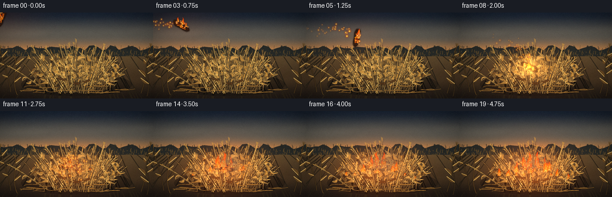
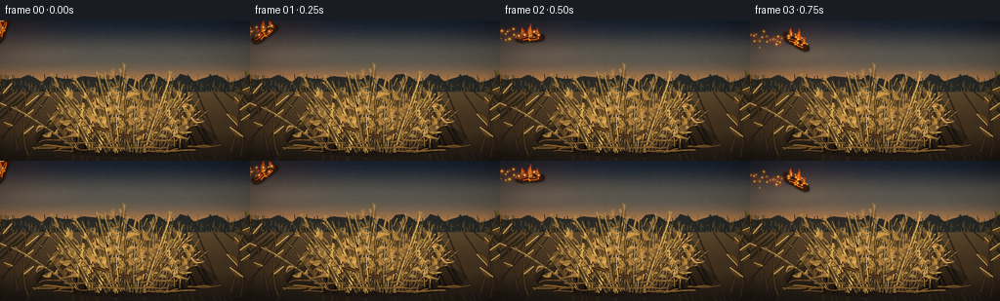
展开代码变化
--- 上一保存版本
+++ 本次保存版本
@@ -338,6 +338,20 @@
width = stalk["width"]
draw_polyline(draw, points, (31, 24, 17, 115), width + 1.4)
draw_polyline(draw, points, stalk["color"], width)
+ texture_rng = np.random.default_rng(4000 + index)
+ for _ in range(3):
+ offset = texture_rng.uniform(-0.55, 0.55) * width
+ texture_points = [
+ (x + offset, y + texture_rng.uniform(-0.25, 0.25)) for x, y in points
+ ]
+ texture_alpha = int(texture_rng.uniform(32, 78))
+ texture_color = (
+ 226,
+ 177 + int(texture_rng.uniform(-15, 15)),
+ 93,
+ texture_alpha,
+ )
+ draw_polyline(draw, texture_points, texture_color, max(0.45, width * 0.17))
if stalk["depth"] > 0.50:
highlight = [(x - 0.32, y - 0.48) for x, y in points]
draw_polyline(draw, highlight, (245, 203, 121, 72), max(0.55, width * 0.30))
@@ -419,6 +433,27 @@
draw_polyline(draw, points, (42, 30, 18, 145), 1.5)
draw_polyline(draw, points, (177, 127, 60, 225), stalk_rng.uniform(0.7, 1.3))
+ # Broken, bright tips catch the low sky and give the pile a dry, irregular silhouette.
+ tip_rng = np.random.default_rng(991)
+ for _ in range(52):
+ x0 = tip_rng.uniform(58.0, 198.0)
+ y0 = tip_rng.uniform(92.0, 126.0)
+ length = tip_rng.uniform(2.5, 7.0)
+ angle = tip_rng.uniform(-2.3, -0.8)
+ points = bezier(
+ (x0, y0),
+ (x0 + math.cos(angle) * length * 0.3, y0 + math.sin(angle) * length * 0.3),
+ (x0 + math.cos(angle) * length * 0.7, y0 + math.sin(angle) * length * 0.7),
+ (x0 + math.cos(angle) * length, y0 + math.sin(angle) * length),
+ 6,
+ )
+ draw_polyline(
+ draw,
+ points,
+ (239, 193, 103, int(tip_rng.uniform(65, 165))),
+ tip_rng.uniform(0.45, 0.9),
+ )
+
# Small dry cobs tucked into the pile add a second material cue.
cob_rng = np.random.default_rng(808)
for cx, cy, angle, length in [
@@ -503,22 +538,49 @@
def shape_points(scale_w, scale_h, wave):
left = []
right = []
- segments = 9
+ segments = 13
for step in range(segments):
u = step / (segments - 1)
- taper = (1.0 - u) ** 0.82
+ taper = (1.0 - u) ** 0.72
wobble = (
- math.sin(phase * 1.55 + seed + u * 5.8) * 0.16
- + math.sin(phase * 2.35 + seed * 1.7 + u * 9.1) * 0.08
+ math.sin(phase * 1.55 + seed + u * 7.3) * 0.17
+ + math.sin(phase * 2.35 + seed * 1.7 + u * 11.1) * 0.10
+ + math.sin(phase * 3.1 + seed * 2.3 + u * 17.0) * 0.035
)
offset = width * scale_w * 0.5 * taper
- center_x = cx + width * scale_w * (0.06 * u + wave * 0.11) + width * scale_w * wobble * u
+ center_x = (
+ cx
+ + width * scale_w * (0.06 * u + wave * 0.14)
+ + width * scale_w * wobble * u
+ )
y = base_y - height * scale_h * u
- left.append((center_x - offset * (0.88 + 0.12 * math.sin(u * 8.0 + seed)), y))
- right.append((center_x + offset * (0.88 + 0.12 * math.cos(u * 7.0 + seed)), y))
+ left.append(
+ (
+ center_x
+ - offset
+ * (
+ 0.84
+ + 0.16 * math.sin(u * 9.0 + seed)
+ + 0.07 * math.sin(u * 23.0 + phase)
+ ),
+ y,
+ )
+ )
+ right.append(
+ (
+ center_x
+ + offset
+ * (
+ 0.84
+ + 0.16 * math.cos(u * 8.0 + seed)
+ + 0.07 * math.cos(u * 21.0 + phase * 1.3)
+ ),
+ y,
+ )
+ )
tip = (
cx
- + width * scale_w * (0.10 * wave + 0.20 * math.sin(phase * 2.8 + seed))
+ + width * scale_w * (0.14 * wave + 0.20 * math.sin(phase * 2.8 + seed))
+ width * scale_w * 0.06,
base_y - height * scale_h * 1.02,
)
@@ -531,6 +593,24 @@
draw.polygon(scaled_points(outer), fill=(255, 70, 12, int(175 * opacity)))
draw.polygon(scaled_points(middle), fill=(255, 137, 24, int(225 * opacity)))
draw.polygon(scaled_points(core), fill=(255, 224, 112, int(238 * opacity)))
+
+ tongue_rng = np.random.default_rng(3200 + int(seed * 91) + int(phase * 40))
+ for _ in range(5):
+ local_x = cx + tongue_rng.uniform(-0.32, 0.32) * width
+ local_h = height * tongue_rng.uniform(0.28, 0.72)
+ local_w = width * tongue_rng.uniform(0.09, 0.19)
+ lean = tongue_rng.uniform(-0.18, 0.18) * width
+ points = [
+ (local_x - local_w * 0.5, base_y - height * 0.12),
+ (local_x + local_w * 0.5, base_y - height * 0.12),
+ (local_x + local_w * 0.22 + lean * 0.35, base_y - local_h * 0.72),
+ (local_x + lean, base_y - local_h),
+ (local_x - local_w * 0.25 + lean * 0.30, base_y - local_h * 0.64),
+ ]
+ draw.polygon(
+ scaled_points(points),
+ fill=(255, 112 + int(55 * tongue_rng.random()), 18, int(100 * opacity)),
+ )
def draw_burning_log(overlay, x, y, angle, scale, phase, alpha=1.0):
@@ -561,6 +641,33 @@
outline=(16, 12, 10, int(240 * alpha)),
width=max(1, int(0.7 * SS)),
)
+ char_rng = np.random.default_rng(6200 + int(phase * 100))
+ for _ in range(14):
+ cx = char_rng.uniform(-14.5, 15.0)
+ cy = char_rng.uniform(-3.8, 3.9)
+ radius = char_rng.uniform(0.35, 1.35)
+ local = transformed_points([(cx, cy)], center, angle, scale)[0]
+ draw.ellipse(
+ [
+ (local[0] - radius) * SS,
+ (local[1] - radius) * SS,
+ (local[0] + radius) * SS,
+ (local[1] + radius) * SS,
+ ],
+ fill=(10, 8, 7, int(char_rng.uniform(80, 180) * alpha)),
+ )
+ for edge_index in range(7):
+ edge_x = -14.0 + edge_index * 4.5
+ char = [
+ (edge_x, -3.6 + char_rng.uniform(-0.6, 0.6)),
+ (edge_x + 1.0, -1.8),
+ (edge_x + 2.3, 2.5 + char_rng.uniform(-0.7, 0.7)),
+ ]
+ draw.line(
+ scaled_points(transformed_points(char, center, angle, scale)),
+ fill=(5, 5, 5, int(175 * alpha)),
+ width=max(1, int(0.75 * SS)),
+ )
top_edge = [
transformed_points([(-12.0, -3.6), (-5.0, -4.0), (3.0, -4.5), (11.0, -3.4)], center, angle, scale)
][0]
@@ -774,18 +881,25 @@
(8, 118.0, 92.5, 8.0, 1.00),
(9, 108.5, 95.0, 7.0, 0.86),
(10, 130.0, 95.0, 7.0, 0.90),
+ (11, 151.0, 99.0, 5.2, 0.58),
(12, 96.0, 101.0, 6.0, 0.72),
+ (12, 119.0, 103.0, 5.4, 0.68),
(13, 145.0, 101.0, 6.5, 0.78),
+ (14, 67.0, 108.0, 4.8, 0.55),
(15, 82.0, 108.0, 5.5, 0.62),
(16, 165.0, 108.0, 5.8, 0.68),
+ (16, 183.0, 113.0, 4.5, 0.50),
(17, 110.0, 99.0, 6.5, 0.92),
(18, 127.0, 101.0, 7.0, 1.02),
+ (19, 96.0, 108.0, 5.8, 0.70),
+ (19, 154.0, 109.0, 5.4, 0.66),
]
return [site for site in sites if frame >= site[0]]
def draw_fire(overlay, frame):
draw = ImageDraw.Draw(overlay, "RGBA")
+ fire_rng = np.random.default_rng(7200 + frame)
for index, (start, x, y, width, strength) in enumerate(fire_sites(frame)):
age = frame - start
growth = smoothstep((age + 0.25) / 7.0)
@@ -815,6 +929,28 @@
index * 2.8 + 7.0,
opacity=0.90,
)
+ for _ in range(3):
+ ember_x = x + fire_rng.uniform(-0.52, 0.52) * width
+ ember_y = y - fire_rng.uniform(0.0, height * 0.42)
+ ember_size = fire_rng.uniform(0.25, 0.80)
+ draw.ellipse(
+ [
+ (ember_x - ember_size * 1.8) * SS,
+ (ember_y - ember_size * 1.8) * SS,
+ (ember_x + ember_size * 1.8) * SS,
+ (ember_y + ember_size * 1.8) * SS,
+ ],
+ fill=(255, 76, 12, int(55 * strength)),
+ )
+ draw.ellipse(
+ [
+ (ember_x - ember_size) * SS,
+ (ember_y - ember_size) * SS,
+ (ember_x + ember_size) * SS,
+ (ember_y + ember_size) * SS,
+ ],
+ fill=(255, 218, 112, int(210 * strength)),
+ )
def add_gaussian(layer, x, y, sx, sy, amplitude):
可观测工具轨迹
实际执行的命令与返回图片。
命令 1exit 0
/bin/bash -lc "pwd && rg --files -g 'prompt.txt' -g 'GENERATION_RULES.md' -g 'task_spec.json' -g '"'!node_modules'"'"
命令 2exit 0
/bin/bash -lc "sed -n '1,240p' prompt.txt"
命令 3exit 0
/bin/bash -lc "sed -n '1,280p' GENERATION_RULES.md"
命令 4exit 0
/bin/bash -lc 'cat task_spec.json'
命令 5exit 0
/bin/bash -lc 'ls -la'
命令 6exit 0
/bin/bash -lc "find . -maxdepth 3 -type f -printf '%p\\n' | sort | head -200"
命令 7exit 0
/bin/bash -lc "python - <<'PY'
import importlib.util
for m in ['numpy','PIL','cv2','imageio','imageio_ffmpeg','scipy']:
print(m, bool(importlib.util.find_spec(m)))
PY"命令 8exit 0
/bin/bash -lc "sed -n '1,260p' artifact_io.py"
命令 9exit 1
/bin/bash -lc 'python generate.py'
命令 10exit 1
/bin/bash -lc 'python generate.py'
命令 11exit 1
/bin/bash -lc 'python generate.py'
命令 12exit 1
/bin/bash -lc 'python generate.py'
命令 13exit 1
/bin/bash -lc 'python generate.py'
命令 14exit 1
/bin/bash -lc 'python generate.py'
命令 15exit 0
/bin/bash -lc 'python generate.py'
命令 16exit 0
/bin/bash -lc "python - <<'PY'
from PIL import Image
for i in [0,3,6,8,10,14,19]:
im=Image.open(f'frames/{i:02d}.png').resize((768,432), Image.Resampling.NEAREST)
im.save(f'.tmp/frame_{i:02d}_x3.png')
PY"命令 17exit 0
/bin/bash -lc 'du -sh frames pixels.npz index.html inspection.png && mkdir -p candidate_v1 && cp -a frames pixels.npz inspection.png index.html candidate_v1/'
命令 18exit 0
/bin/bash -lc 'python generate.py'
命令 19exit 0
/bin/bash -lc "python - <<'PY'
import json, numpy as np
from PIL import Image
from pathlib import Path
spec=json.loads(Path('task_spec.json').read_text())
with np.load('pixels.npz') as z:
p=z['pixels']
print('tensor', p.shape, p.dtype, 'range', int(p.min()), int(p.max()))
frames=np.stack([np.asarray(Image.open(f'frames/{i:02d}.png')) for i in range(spec['frames'])])
print('frames', frames.shape, frames.dtype)
print('unique adjacent pixels', [int((frames[i]"'!=frames[i-1]).any(axis=2).sum()) for i in range(1,20)])
print('"'mean luminance', [round(float(frames[i].mean()),2) for i in [0,4,8,12,16,19]])
print('artifacts', [(name, Path(name).exists()) for name in ['pixels.npz','index.html','inspection.png','transition_check.png','generate.py']])
PY"命令 20exit 0
/bin/bash -lc "python - <<'PY'
from pathlib import Path
import numpy as np
from PIL import Image
frames=[np.asarray(Image.open(f'frames/{i:02d}.png')).astype(np.float32) for i in range(20)]
w=256; h=144
sheet=Image.new('RGB',(w*5,h*4))
for i,f in enumerate(frames):
sheet.paste(Image.fromarray(f.astype(np.uint8)),((i%5)*w,(i//5)*h))
sheet.save('.tmp/all_frames_5x4.png')
PY"命令 21exit 0
/bin/bash -lc "python -m py_compile generate.py && python - <<'PY'
from pathlib import Path
import numpy as np
with np.load('pixels.npz') as z:
p=z['pixels']
assert p.shape == (144, 256, 20)
assert len(list(Path('frames').glob('*.png'))) == 20
assert all(Path(name).is_file() for name in ['index.html','inspection.png','transition_check.png'])
print('final validation: ok')
PY"命令 22exit 0
/bin/bash -lc 'git status --short'
视觉工具实际返回图片 1
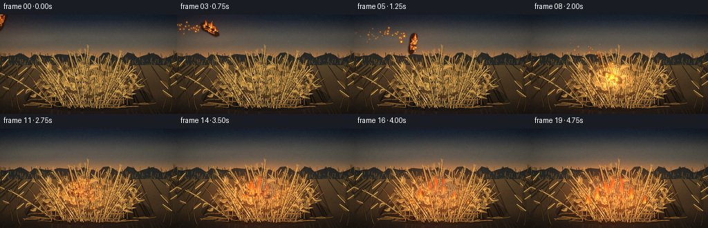
视觉工具实际返回图片 2
视觉工具实际返回图片 3
视觉工具实际返回图片 4
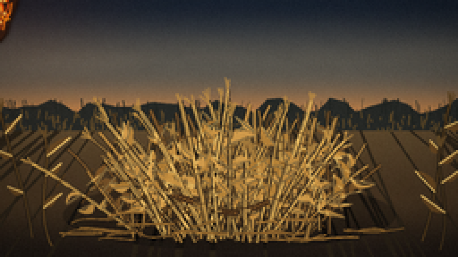
视觉工具实际返回图片 5
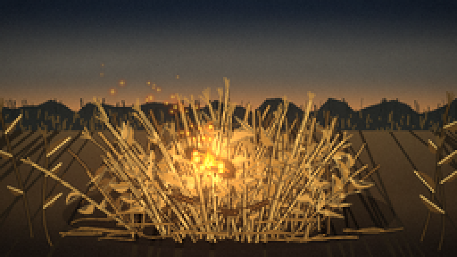
视觉工具实际返回图片 6
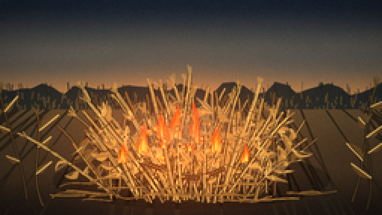
视觉工具实际返回图片 7
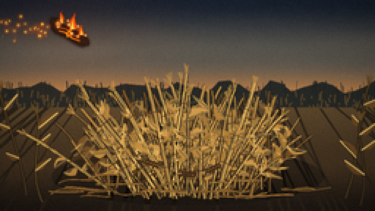
视觉工具实际返回图片 8
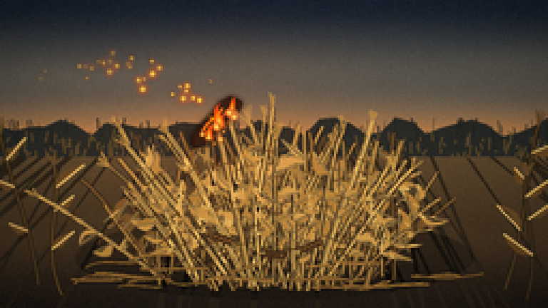
视觉工具实际返回图片 9

视觉工具实际返回图片 10
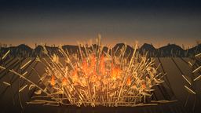
视觉工具实际返回图片 11
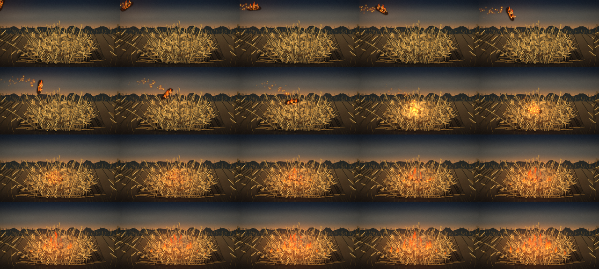
保存候选 2 份；完成命令 22 次；可验证图片返回 11 张。原始 API 响应与完整日志保留在本地。